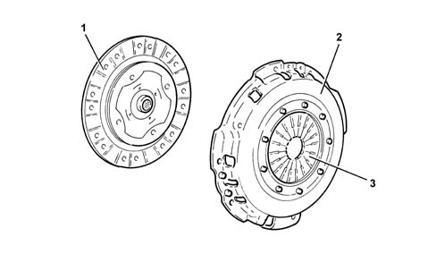

Specifications
- Path
- Descriptions > 18 CLUTCH > 1810 CLUTCH MECHANISMS > Specifications
- Kind
- system description
- Applies to
- all engines; all production periods
- Interactive page
- https://sloeber94.github.io/elrnDB-lThss/en/#/144395
Applies to: all engines; all production periods
The clutch mechanism consists of a drip tray with a diaphragm spring and thrust release and a dry, single plate type clutch plate.

- 1 - Clutch plate
- 2 - Clutch mechanism
- 3 - Thrust spring